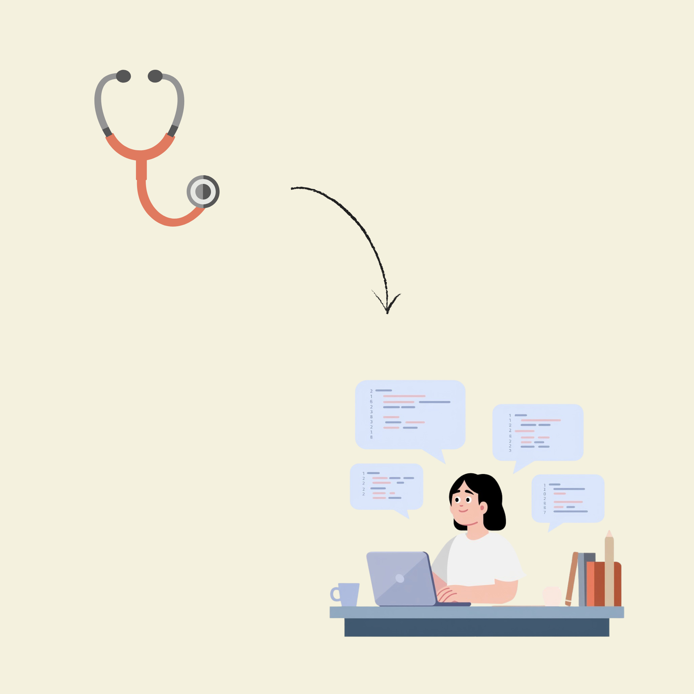

Cuento con seis años de experiencia como enfermera, cuatro de ellos especializada en salud mental. Durante este tiempo he desarrollado habilidades como la organización, la gestión del tiempo y la capacidad de análisis en entornos exigentes, siempre manteniendo un enfoque humano y resolutivo.
Actualmente he emprendido un cambio de orientación profesional hacia el desarrollo de software, con el objetivo de crecer en un ámbito que me permita combinar el pensamiento lógico con la creatividad.
Me ilusiona afrontar este nuevo camino con la misma dedicación con la que he trabajado en mi carrera anterior, y con la convicción de que la tecnología puede ser una herramienta transformadora.
